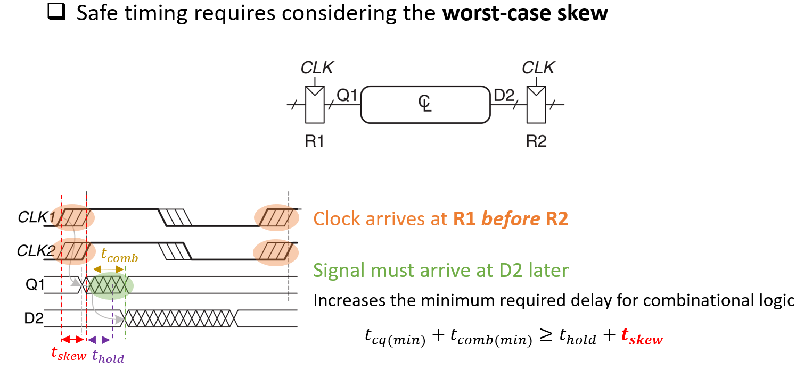
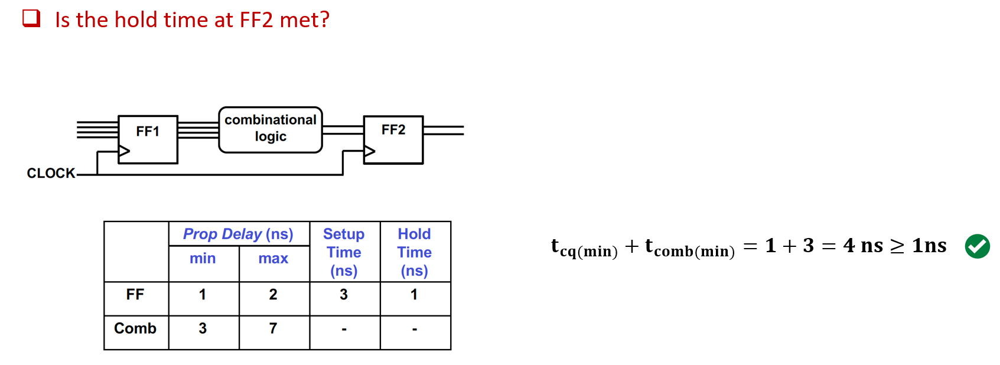

5 Timing
This chapter first introduces the notion delays. Sequential elements will also be introduced in the sequential chapter, which will be needed to understand further timing analysis in this chapter.
5.1 Delays
Transistors have delays, thus ON/OFF switching does not happen instantly
Propagation Delay (\(t_p\)) is the delay between the 50% transition point of the input and the 50% transition point of the output
- \(t_{p, LH}\) - is the delay when the output transitions from LOW to HIGH
- \(t_{p, HL}\) - is the delay when the output transitions from HIGH to LOW
Delays are primarily caused by:
- Capacitance
- Resistance
- Topology
- Finite speed of light
For simplicity, this notebook assumes 0 wire delay. Read the CMOS VLSI notebook for more on wire delays.
Ring Oscillator can be built with a chain of odd number inverters
5.2 Delays of Sequential Elements
Sequential elements are built on timing delays
For a D latch:
For a D Flip Flop:
5.3 Sequential Timing

When there are setup and hold time violations, the FF enters a state where its output is unpredictable, known as metastable state.
Side notes on metastability: In metastability, the FF struggles to resolve to a stable logic level with internal nodes of the latch receiving conflicting signals leading to an unstable equillibrium. The resolution time of the FF depends on the internals of the circuit. The internal feedback mechanism tries to stabilize it, but this may take long. Theoretically the resolution time is unbounded. However in practice, with no other input changes, eventually metastability resolves to a stable 0 or a 1 (exponentially decreasing probability), but the resolution time is unpredictable. Synchronizers are used to mitigate the effects. In practice, metastability can’t be completely eliminated (real systems will deal with asynchronous inputs, clock domain crossings, etc).
Possible causes of metastability or wrong value capture:
- FF input changes too soon before a clock edge
- FF input changes too soon after a clock edge
- Propagation delay exceeds clock period
- Clock pulse that is too narrow
Avoid these by meeting setup time, hold time, clock period, and minimum clock pulse width specifications
Timing Analysis involves analyzing the time delays between all FF pairs within a circuit
Key goals:
- Determine max clock frequency and ensure setup time requirement is met
- i.e. clock can’t be too fast
- Ensure hold times are met
- Minimum propagation delay of comb logic can’t be too small
- Hold time is independent of clock cycle time
5.3.1 Hold Time Constraint
\[t_{cq(min)}+t_{comb(min)} = t_{cq} \geq t_{hold}\]
Methods to fix hold time violation:
- Increase minimum data path delay
- Insert buffers or delay cells on minimum delay path
- Increase wire length or modify gate sizing
- Reduce clock skew
- increase clock delay at destination register, reduce clock delay at source register
- Remember that hold time is independent of the clock cycle’s time (clock period)
5.3.2 Max Clock Frequency & Setup Time
Every circuit path between every pair of FFs must satisfy the following equation to run the circuit at a frequency of \(f=\frac{1}{T_{clk}}\)
\[t_{cq(max)}+t_{comb(max)}+t_{setup} \leq T_{clk}\]
Methods to fix setup time violation:
- Reduce data path delay
- logic optimizations (reduce logic depth)
- pipelining - break longer comb logic to smaller comb logics
- gate sizing (reduce gate delay by modifying gate size)
- Clock timing
- Reduce clock frequency (longer clock period)
- Reduce clock skew
5.3.3 Clock Skew
Clock skew: time difference between two clock edges
Ways to fix clock skew mostly involve more circuit level design (see CMOS VLSI notes)
5.3.3.1 Clock Skew - Setup Time

5.3.3.2 Clock Skew - Hold Time

5.4 Glitches
Glitch: one input transition causes multiple output transitions
Glitches are primarily caused when different inputs paths have varying propagation delays, leading to momentary incorrect (intermediate) output values
Why are glitches a problem?
- Creates additional unwanted switching activity - increasing dynamic power consumption
- Potentially dangerious - if glitch propagates to a latch or if it affects timing-critical signal
- Noise and crosstalk - additional unwanted switching could add noise to nearby circuits
Glitches are visible in K-maps when moving between prime implicants
5.4.1 Fixing Glitches
A glitch can be fixed by adding in a consensus term. Observe that in the K-map, we can add the consensus such that there is no “gap” when moving between prime implicants.
Additional methods:
- Adding buffers (delay matching)
- Since glitches are caused by different paths having different delays, if we pad the paths with buffers or delay elements to align timing this could fix glitches
- Path balancing by adjusting gate sizes to equalize delays across different paths
- Restructuring logic - reorder the gates to minimize path differences to balance delays between paths
5.5 Synchronizers
Synchronizer: A device that produces a synchronous output Q from an asynchronous input D within a bounded amount of time.
- Very useful for dealing with asynchronous input signals, clock domain crossing, mitigating effects of metastability
5.6 Examples
5.6.1 Basic Timing Examples
5.6.2 Basic Setup & Hold Time Examples
